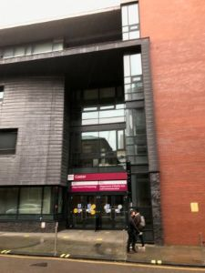
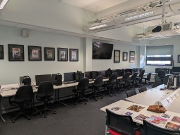
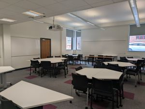

Welcome to Cantor College
Cantor College is a leading institution committed to providing high-quality education and excellent learning facilities. We offer a wide range of courses designed to prepare students for successful careers and lifelong learning. Our experienced staff support students in developing practical skills, academic knowledge, and professional confidence. Cantor College also provides modern facilities and a supportive campus environment to enhance the overall student experience. please click hereTo read more about our courses.
Our Courses
We offer a diverse range of courses in Computing and Design, tailored to equip students with the skills needed for their careers. please click here to explore our courses.

About us
Cantor College was established in 1989 to specialize in Computing and Design. At Cantor College, we want to give students the education they need to achieve their career aims, leaving them equipped with the knowledge, skills and experience to succeed. Cantor College gives you the opportunities that can give you the edge when you enter the world of work, through our teaching and our links to some of the world's leading researchers and employers. please click here for more details about us.

Our Facilities
Explore Cantor College: World-Class Facilities for Your Success At Cantor College, we are committed to providing our students with the best possible environment to learn, create, and innovate. Our state-of-the-art facilities are designed to support your academic journey and help you thrive in your chosen field. Whether you’re studying computing, design, or technology, our campus offers everything you need to excel. please click here for more information about Our facilities.

College Environment
The College is located in the attractive and pleasantly refurbished Building. The building houses computing laboratories, and lecture/tutorial rooms. It has its own catering facilities and student work areas. There is also a car park to the back of the building. please click here for more information about Our facilities.